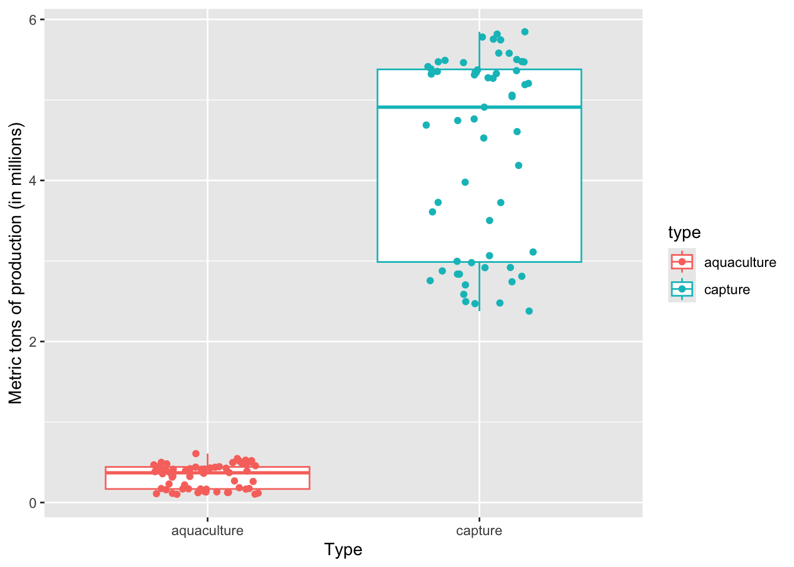
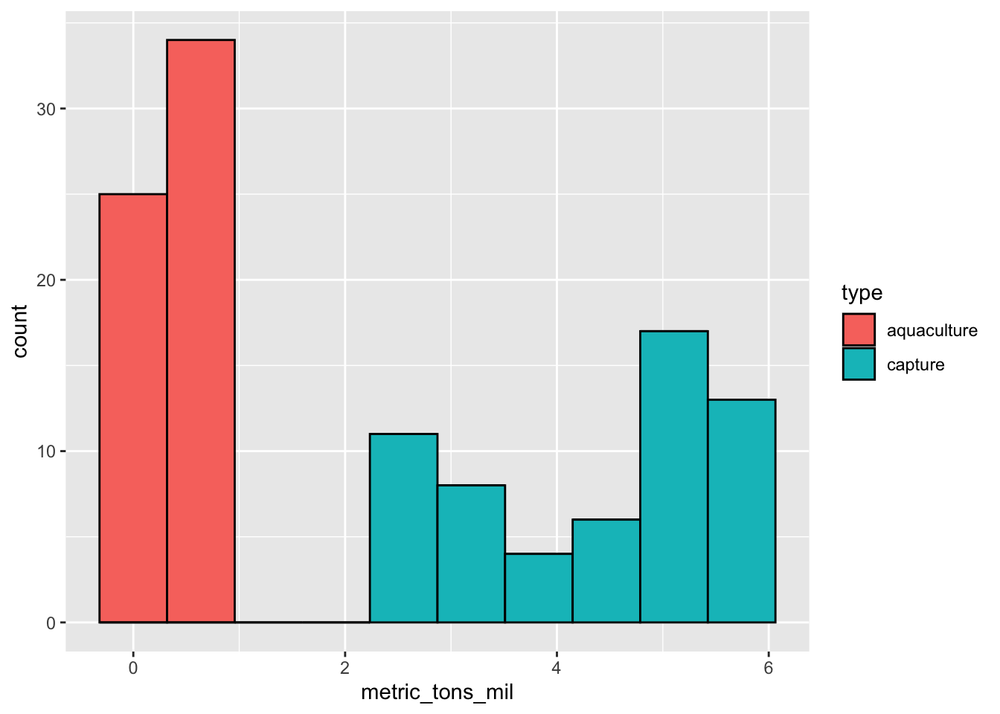
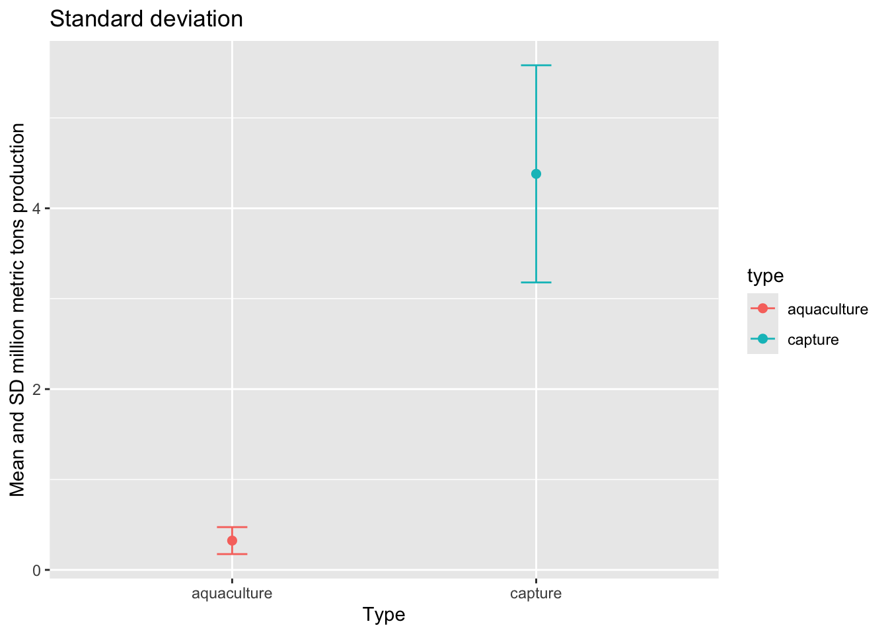
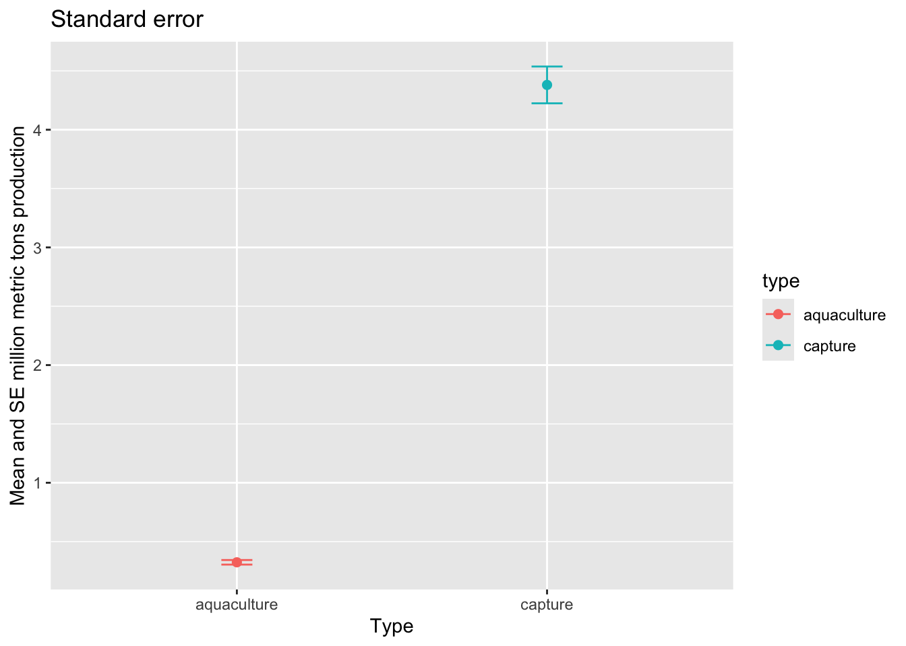
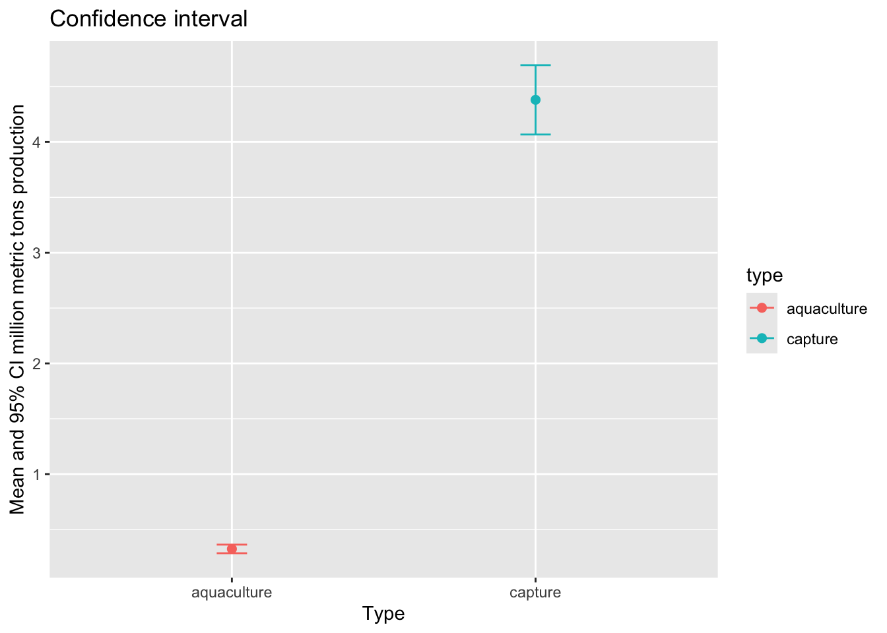
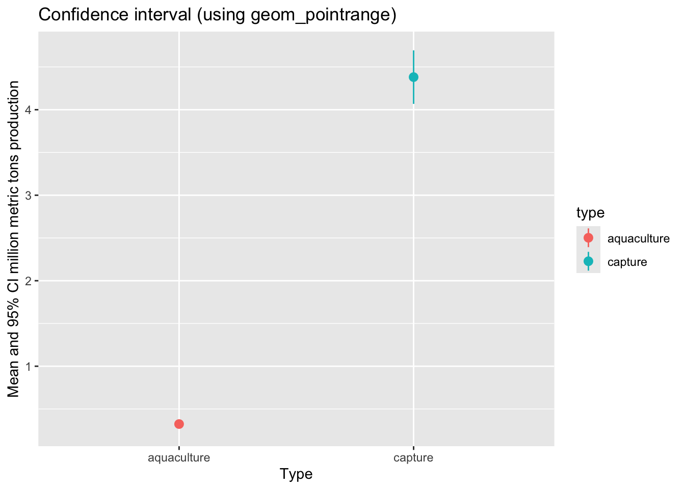
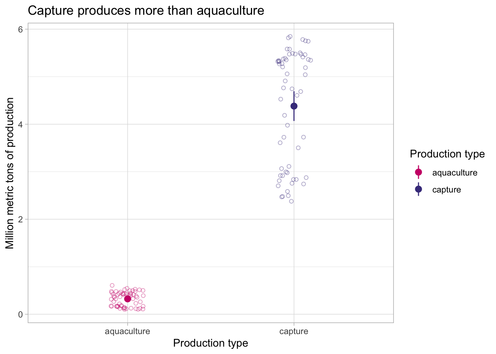
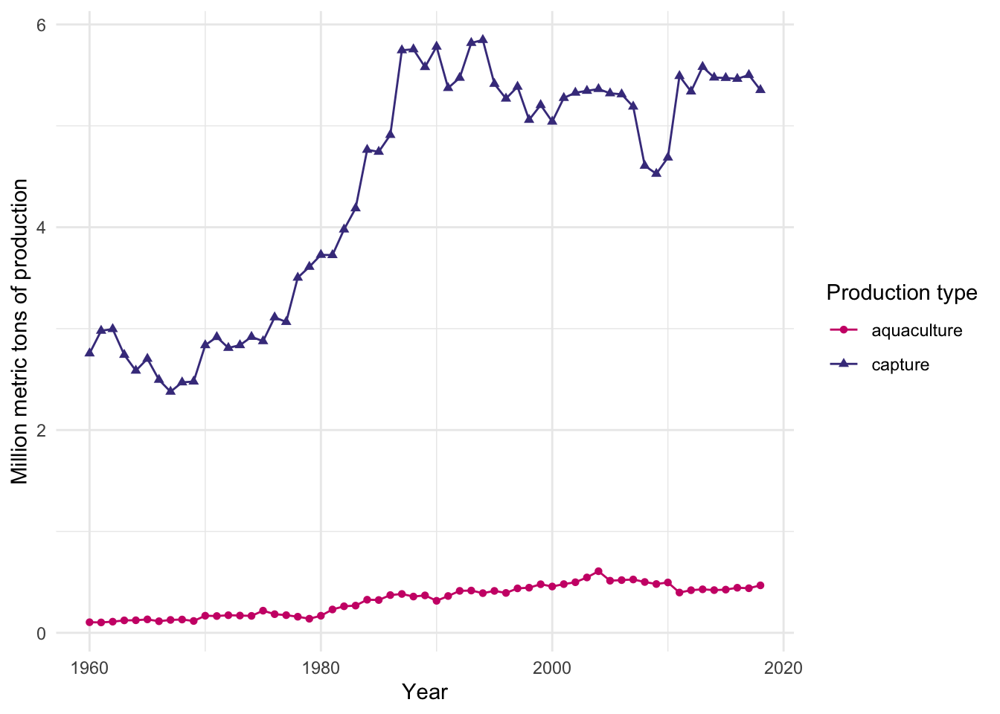

# load in packages
library(tidyverse)
library(janitor)Workshop dates: April 10 (Thursday), April 11 (Friday)
1. Summary
Packages
tidyverse
janitor
Operations
- read in data using
read_csv()
- chain functions together using
|>
- clean column names using
clean_names()
- create new columns using
mutate()
- select columns using
select()
- make data frame longer using
pivot_longer()
- group data using
group_by()
- summarize data using
summarize()
- calculate standard deviation using
sd()
- calculate t-values using
qt()
- expand data frames using
deframe()
- visualize data using
ggplot()
- create histograms using
geom_histogram()
- visualize means and raw data using
geom_point()
- visualize standard deviation, standard error, and confidence intervals using
geom_errorbar()andgeom_pointrange()
- visualize trends through time using
geom_point()andgeom_line()
Data source
This week, we’ll work with data on seafood production types (aquaculture or capture). This workshop’s data comes from Tidy Tuesday 2021-10-12, which was from OurWorldinData.org.
2. Code
1. Set up
This section of code includes reading in the packages you’ll need: tidyverse and janitor.
You’ll also read in the data using read_csv() and store the data in an object called production.
# read in data
production <- read_csv("captured_vs_farmed.csv")
Note
Remember to look at the data before working with it! You can use View(production) in the console, or click on the production object in the Environment tab in the top right.
Before you start: think about what the differences might be between aquaculture and capture production in the context of fisheries. Which production type do you think would produce more seafood?
insert your best guess here
2. Cleaning up
The data comes in what’s called “wide format”, meaning that each row represents multiple observations. For example, the first row contains the production from Afghanistan (country code AFG) in 1969 for aquaculture and capture production.
We want to convert the data into “long format” so that it’s easier to work with. A dataset is in long format if each row represents an observation.
In this chunk of code, we’ll:
- clean the column names using
clean_names()
- filter to only include the “entity” we want using
filter()
- select the columns of interest using
select()
- make the data frame longer using
pivot_longer()
- manipulate the
typecolumn to change the long names (e.g.aquaculture_production_metric_tons) to short names (e.g.aquaculture) usingmutate()andcase_when()
- use
mutate()to create a new column calledmetric_tons_mil
production_clean <- production |> # use the production data frame
clean_names() |> # clean up column names
filter(entity == "United States") |> # filter to only include observations from the US
select(year, aquaculture_production_metric_tons, capture_fisheries_production_metric_tons) |> # select columns of interest
pivot_longer(cols = aquaculture_production_metric_tons:capture_fisheries_production_metric_tons, # choose columns to pivot
names_to = "type", # name the column name with fishery type "type"
values_to = "catch_metric_tons") |> # name the column name with the catch amount "catch_metric_tons"
mutate(type = case_when( # mutate the existing type column
type == "aquaculture_production_metric_tons" ~ "aquaculture", # when "aquaculture_production_metric_tons" appears in the "type" column, fill in "aquaculture"
type == "capture_fisheries_production_metric_tons" ~ "capture" # when "capture_fisheries_production_metric_tons" appears in the "type" column, fill in "capture"
)) |>
mutate(metric_tons_mil = catch_metric_tons/1000000) # convert catch in metric tons to millions3. Making a boxplot/jitter plot
Last week in workshop, we made a boxplot. The boxplot shows useful summary statistics (displays the central tendency and spread), while the jitter plot shows the actual observations (in this case, each point is the catch for a fishery in a given year). One way to display the underlying data is to combine a boxplot with a jitter plot.
ggplot(data = production_clean, # start with the production_clean data frame
aes(x = type, # x-axis should be type of production
y = metric_tons_mil, # y-axis should be metric tons of production (in millions)
color = type)) + # coloring by production type
geom_boxplot() + # first layer should be a boxplot
geom_jitter(width = 0.2, # making the points jitter horizontally
height = 0) + # making sure points don't jitter vertically
labs(x = "Type", # labelling the x-axis
y = "Metric tons of production (in millions)") # labelling the y-axis
On average, a) which type of production produces more fish, and b) what components of the plot are you using to come up with your answer?
a) Capture production, because b) the median of the boxplot is way higher than the median for aquaculture
4. Making a histogram
This chunk of code creates a histogram. Note that for a histogram, you only need to fill in the aes() argument for the x-axis (x), not the y-axis. This is because ggplot() counts the number of observations in each bin for you.
Within the geom_histogram() call, you’ll need to tell R what number of bins you want using the bins argument. In this case (using the Rice Rule to determine the appropriate number of bins), we’ll use 10 bins.
ggplot(data = production_clean,
aes(x = metric_tons_mil,
fill = type)) + # fill the histogram based on the fishery type
geom_histogram(bins = 10, # set the number of bins
color = "black") # make the border of the columns black
Can you tell from looking at the histogram which production type tends to produce more fish? Why or why not?
Yes. There are no observations for aquaculture at high catch (in millions); most of the observations for aquaculture are lower than 1 million tons, while capture production ranges up to 6 million tons.
5. Visualizing spread, variance, and confidence
a. Calculations
# calculate the confidence interval "by hand"
production_summary <- production_clean |> # start with the production_clean data frame
group_by(type) |> # group by production type
summarize(mean = mean(metric_tons_mil), # calculate the mean
n = length(metric_tons_mil), # count the number of observations
df = n - 1, # calculate the degrees of freedom
sd = sd(metric_tons_mil), # calculate the standard deviation
se = sd/sqrt(n), # calculate the standard error
tval = qt(p = 0.05/2, df = df, lower.tail = FALSE), # find the t value
margin = tval*se, # calculate the margin of error
ci_lower = mean - tval*se, # calculate the lower bound of the confidence interval
ci_higher = mean + tval*se # calculate the upper bound of the confidence interval
)
production_summary# A tibble: 2 × 10
type mean n df sd se tval margin ci_lower ci_higher
<chr> <dbl> <int> <dbl> <dbl> <dbl> <dbl> <dbl> <dbl> <dbl>
1 aquaculture 0.324 59 58 0.149 0.0194 2.00 0.0389 0.285 0.363
2 capture 4.38 59 58 1.20 0.156 2.00 0.313 4.07 4.69 # use a function to calculate the confidence interval
production_ci <- production_clean |>
group_by(type) |>
summarize(ci = mean_cl_normal(metric_tons_mil)) |> # calculate the CI using a function
deframe() # expand the data frame
production_ci y ymin ymax
aquaculture 0.323932 0.285032 0.362832
capture 4.381083 4.068038 4.694128When you compare the 95% CI from production_summary and production_ci, they should be about the same.
b. Visualizations
When visualizing the central tendency (in this case, mean) and spread (standard deviation) or variance (standard error) or confidence (confidence intervals), you can stack geoms on top of each other.
To visualize the mean, we’ll use geom_point(). Remember that geom_point() can be used for any plot you want to make that involves a point.
To visualize the spread/variance/confidence, we’ll use geom_errorbar(). This is the geom that creates two lines that can extend away from a point.
Standard deviation
First, we’ll visualize standard deviation.
ggplot(data = production_summary, # use the summary data frame
aes(x = type, # x-axis should be production type
y = mean, # y-axis should show the mean production
color = type)) + # color the points by fishery type
geom_point(size = 2) + # plot the mean
geom_errorbar(aes(ymin = mean - sd, # plot the standard deviation
ymax = mean + sd),
width = 0.1) + # make the bars narrower
labs(title = "Standard deviation",
x = "Type",
y = "Mean and SD million metric tons production")
Standard error
Then, we want to visualize standard error.
ggplot(data = production_summary, # use the summary data frame
aes(x = type,
y = mean,
color = type)) + # color the points by fishery type
geom_point(size = 2) + # plot the mean
geom_errorbar(aes(ymin = mean - se, # plot the standard error
ymax = mean + se),
width = 0.1) +
labs(title = "Standard error",
x = "Type",
y = "Mean and SE million metric tons production")
95% confidence interval
Then, we want to visualize the 95% confidence interval.
ggplot(data = production_summary, # use the summary data frame
aes(x = type,
y = mean,
color = type)) + # color the points by fishery type
geom_point(size = 2) + # plot the mean
geom_errorbar(aes(ymin = mean - margin, # plot the margin of error
ymax = mean + margin),
width = 0.1) +
labs(title = "Confidence interval",
x = "Type",
y = "Mean and 95% CI million metric tons production")
c. geom_pointrange()
We can also visualize means and spread/variance/confidence intervals using the geom_pointrange() function.
ggplot(data = production_summary, # use the summary data frame
aes(x = type,
y = mean,
color = type)) + # color the points by fishery type
geom_pointrange(aes(ymin = mean - margin,
ymax = mean + margin)) +
labs(title = "Confidence interval (using geom_pointrange)",
x = "Type",
y = "Mean and 95% CI million metric tons production")
d. Visualizing with the underlying data
Lastly, we want to visualize the 95% confidence interval with the underlying data.
# base layer: ggplot
ggplot(data = production_clean,
aes(x = type,
y = metric_tons_mil,
color = type)) +
# first layer: adding data (each point shows an observation)
geom_jitter(width = 0.1,
height = 0,
alpha = 0.4,
shape = 21) +
# second layer: means and 95% CI
geom_pointrange(data = production_summary,
aes(x = type,
y = mean,
ymin = mean - margin,
ymax = mean + margin)) +
# changing appearance: colors, labels, and theme
scale_color_manual(values = c("aquaculture" = "deeppink3",
"capture" = "slateblue4")) +
labs(x = "Production type",
y = "Million metric tons of production",
color = "Production type",
title = "Capture produces more than aquaculture") +
theme_light()
ggplot themes
There are lots of themes in ggplot to play around with. These are nice to use to get rid of the grey background that is the default, and generally make your plot look cleaner.
A list of built-in themes and their theme_() function calls is here.
e. Visualizing through time
Then, if we want to visualize production through time:
ggplot(data = production_clean,
aes(x = year,
y = metric_tons_mil,
color = type,
shape = type)) +
geom_point() +
geom_line() +
scale_color_manual(values = c("aquaculture" = "deeppink3",
"capture" = "slateblue4")) +
labs(x = "Year",
y = "Million metric tons of production",
color = "Production type",
shape = "Production type") +
theme_minimal()
END OF WORKSHOP 2